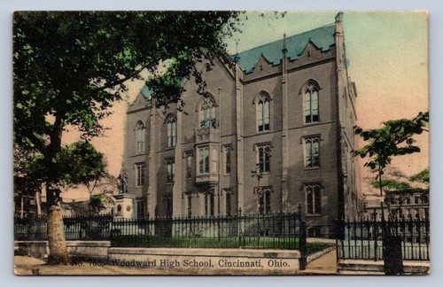
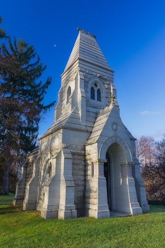

Brewster line · Morgan County, Tennessee, and Cincinnati, Ohio
Also known as: Homer W. Brewster
Profile status: DOCUMENTED
Quick Facts
Born
31 August 1911, Morgan County, Tennessee DOCUMENTED (Florida Death Index; headstone). An Ancestry snippet gives 18 March 1912 UNPROVED
Married
Sarah Hazel Kelly, 6 August 1930, Hamilton, Ohio DOCUMENTED (Ohio county marriage record)
Died
8 March 1991, Palm Beach, Florida, age 79 DOCUMENTED (Florida Death Index cert. 32620; headstone; obituary). One newspaper index says 9 March UNPROVED
Buried
Spring Grove Cemetery, Cincinnati, Ohio, Section 134, Lot 54, Grave 7, beside Sarah under a shared stone DOCUMENTED
Residences
Ford Road, Morgan County, Tennessee (1935, 1940); 517 12th Street, Cincinnati (1950); 519 E. 12th Street (1953); later College Hill DOCUMENTED
Occupation
Not found
Religion
Not found
Military
No service record found; his 1940s draft registration is still to check
Immediate Family
Parents
William Alexander Brewster (1884–1957) DOCUMENTED Mary Ellen McKinney (1889–1927) DOCUMENTED
Spouse
Sarah Hazel Kelly (1912–1987), married 6 Aug 1930 DOCUMENTED
Children
Eunice E. (Brewster) Burton (abt 1931–1987) DOCUMENTED Eugene Brewster (abt 1933–before 1987) DOCUMENTED Elmer Brewster (1935–1993), twin DOCUMENTED Earl Brewster (1935–1959), twin DOCUMENTED A daughter, b. about 1937 (name kept private until living status is checked) DOCUMENTED Homer William Brewster Jr. (1939–2000) DOCUMENTED
Siblings
Lola Edna Brewster (Sears), full sister, b. about 1915 DOCUMENTED
William Alexander Brewster Jr., half-brother UNPROVED
Mary Lee (Brewster) Evans, half-sister UNPROVED
Cleo Brewster, half-sibling UNPROVED
James Brewster, half-brother UNPROVED
Sarah Elizabeth (Brewster) Galloway, half-sister UNPROVED
Lola is in the 1920 census with Homer. The five half-siblings are children of his father and stepmother Julia Bell Kelly, Sarah's sister; their names come from family trees and still need records.
1911 · age 0 Born, Morgan County, Tennessee DOCUMENTED
1920 · age 8 In his parents' household with sister Lola, Civil District 12, Morgan County, TN DOCUMENTED
1927 · age 16 Mother Mary Ellen died, Morgan County, TN SUPPORTED
1930 · age 18 Married Sarah Hazel Kelly (6 Aug), Hamilton, Ohio DOCUMENTED
1931–1939 · age 19–27 Six children born, Tennessee and Ohio DOCUMENTED
1940 · age 28 Family of eight on Ford Road, same house as 1935, Morgan County, TN DOCUMENTED
1950 · age 38 Family at 517 12th Street, Cincinnati, Ohio DOCUMENTED
1952 · age 40 Twin sons Elmer and Earl joined the Marines, Cincinnati DOCUMENTED
1953 · age 41 Earl wounded at Pork Chop Hill, Korea (27 Jul), Korea DOCUMENTED
1959 · age 47 Son Earl killed in a car crash, U.S. 62, Kentucky DOCUMENTED
1987 · age 75 Wife Sarah died (28 Feb), Hamilton, Ohio DOCUMENTED
1991 · age 79 Died (8 Mar); buried Spring Grove, Palm Beach, FL; Cincinnati, OH DOCUMENTED
Life Story
Homer William Brewster Sr. was born on 31 August 1911 in Morgan County, Tennessee, on the Cumberland Plateau, the son of William Alexander Brewster and Mary Ellen McKinney. The 1920 census finds him at eight in his parents' home in Civil District 12, with his little sister Lola, five.
His mother died around 1927, when Homer was sixteen. His father later married Julia Bell Kelly, and that tied the family to the Kellys twice over: Julia's sister Sarah Hazel Kelly, a Georgia girl, became Homer's wife.
Homer and Sarah married on 6 August 1930 in Hamilton, Ohio. Six children followed through the 1930s: Eunice, Eugene, the twins Elmer and Earl, a daughter, and Homer Jr. In 1940 the family of eight lived on Ford Road in Morgan County, in the same house as five years before.
By 1950 they had moved north to Cincinnati, to 517 12th Street, and by 1953 to 519 E. 12th Street. In January 1952 the twins joined the Marines on their seventeenth birthday. Elmer served in California; Earl went to Korea and was wounded at Pork Chop Hill on 27 July 1953, the last day of the war. Homer lost Earl to a car crash in Kentucky in 1959.
Sarah died in Hamilton, Ohio, on 28 February 1987. Homer died in Palm Beach, Florida, on 8 March 1991, at seventy-nine, formerly of College Hill. He was buried beside Sarah at Spring Grove Cemetery in Cincinnati, under their shared stone. He left twenty-four grandchildren and thirty-eight great-grandchildren.
More of Homer's story will be added as family members share their memories.
Photo Gallery
Living family members are left out of public photos.
Homer as a young man, studio portraitHomer and Sarah by the Christmas treeHomer and Sarah, portraits

Woodward High School, Cincinnati, where son Earl went to school

Spring Grove Cemetery, Cincinnati, where Homer and Sarah rest
Sources and Evidence
1920 U.S. census, Morgan County, Tennessee, Civil District 12, ED 52, sheet 2A, household 29: Homer, 8, son of Willie A. and Mary E. Brewster. FamilySearch https://www.familysearch.org/ark:/61903/1:1:MNPT-5PQDOCUMENTED
Ohio County Marriages: Homer Brewster and Sarah Kelly, 6 Aug 1930, Hamilton, Ohio; parents Wm Brewster and Mary McKinney. Both indexed as age 21. FamilySearch https://www.familysearch.org/ark:/61903/1:1:2Q4J-61GDOCUMENTED
1940 and 1950 U.S. censuses: Ford Road, Morgan County, TN; 517 12th Street, Cincinnati DOCUMENTED
Obituary of Homer W. Brewster Sr. (d. Friday 8 Mar 1991, age 79, formerly of College Hill; Hodapp Funeral Home): six children, 24 grandchildren, 38 great-grandchildren DOCUMENTED
Obituaries of Sarah (1987), Eunice Burton (1987) and Elmer Brewster (1993); newspaper articles on Earl's Korea wounding (1953) and fatal crash, in the family collection DOCUMENTED
Social Security Death Index: Homer W. Brewster, b. 31 Aug 1911, d. Mar 1991 SUPPORTED
Grades: DOCUMENTED an original record says it · SUPPORTED several records point to it · FAMILY ACCOUNT the family's own telling · UNPROVED a lead, not proved.
Research Notes and Open Questions
Age on the 1930 marriage record (21) does not fit his 1911 birth (he was 18). Names, date and parents all match, so the record is his.
Birth date: 31 Aug 1911 is backed by the death index and headstone; a Tennessee birth record or delayed birth certificate would settle it on paper.
Occupation not found. The 1940 and 1950 census occupation columns are the next place to look.
WWII draft registration (1940–42) not yet read.
Florida death certificate 32620 would name his parents and the informant (paid copy; not ordered).
When the family moved from Morgan County to Cincinnati (between 1940 and 1950) is not pinned down.